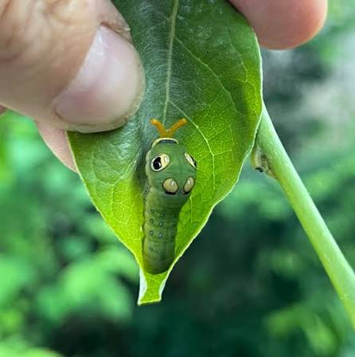

Cette chenille correspond à la chenille du Papilio troilus, aussi appelé Spicebush Swallowtail.
Elle se reconnaît à son corps vert et surtout à ses grandes taches jaunes-oranges entourées de noir, qui ressemblent à de véritables yeux.
Ces faux yeux servent à tromper ou à surprendre les prédateurs.
Lorsqu'elle grandit, la chenille peut atteindre environ 4 cm et se nourrit principalement de feuilles de laurier des bois et de sassafras.
Cette chennille possère un Osmeterium.
C'est un organe de défense en forme de fourche. Quand la chenille se sent menacée, elle le fait sortir rapidement.
Il dégage alors une odeur forte qui peut repousser certains prédateurs. Elle peut également le bouger pour intimider ou repousser le prédateur.